Lahore, A sentimental journey
گر کوئی شخص کسی موضوع پر اتنا جذباتی ہوکر لکھے کہ اسے پڑھنے کے بعد آپکو احساس ہونے لگے شائد وہ سارا زمانہ آپ خود بھی گزار کر آئے ہیں وہ ماضی صرف کتاب کے مصنف کا نہیں تھا میرا بھی تھا تو اس کتاب کو لاہور ایک سینٹمنٹل جرنی کہتے ہیں۔
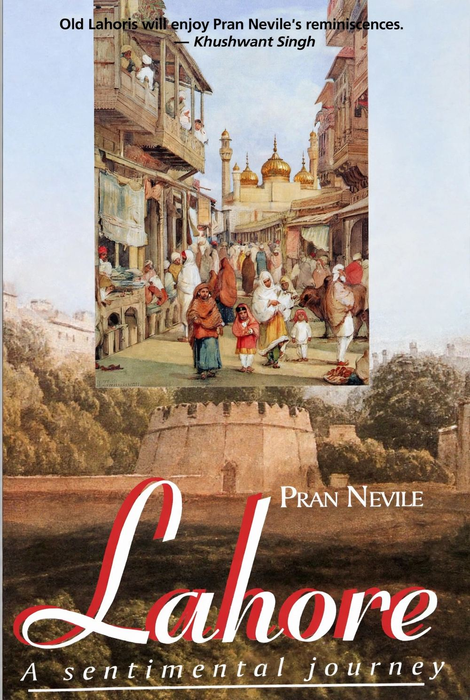
1
Lahore — A sentimental journey
لاہور — ایک جذباتی سفر
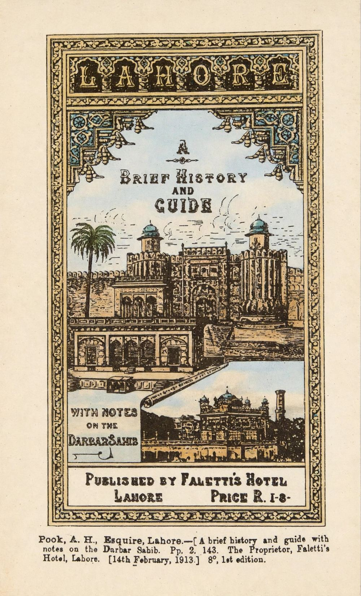
2
LAHORE — A Brief History and Guide
لاہور — مختصر تاریخ اور گائیڈ
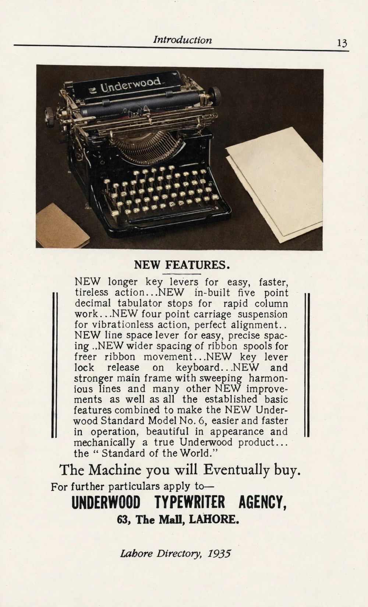
3
NEW FEATURES. — UNDERWOOD TYPEWRITER AGENCY, 63, The Mall, LAHORE. Lahore Directory, 1935
نئی خصوصیات — انڈر وڈ ٹائپ رائٹر ایجنسی، 63 مال روڈ لاہور۔ لاہور ڈائریکٹری، 1935ء
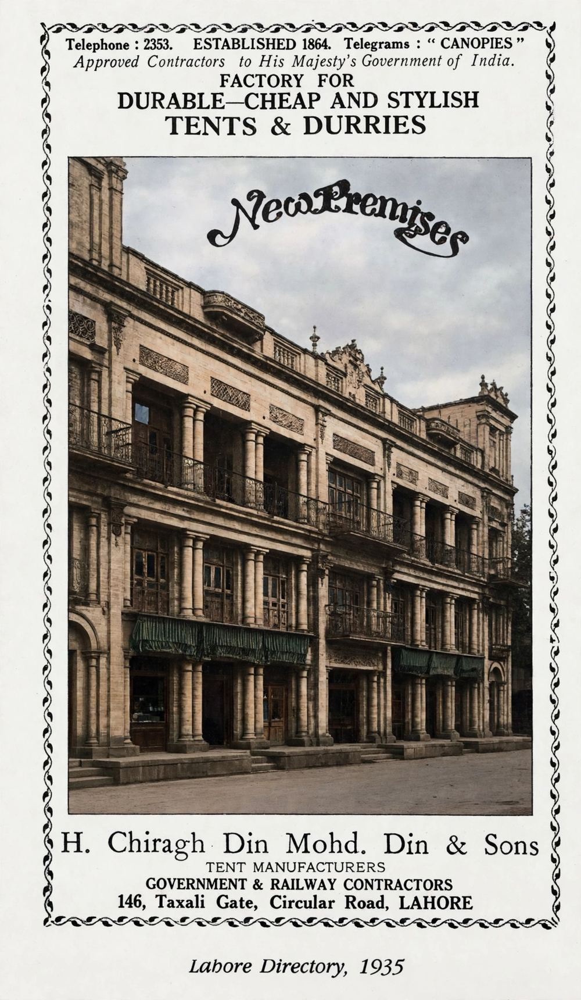
4
FACTORY FOR DURABLE—CHEAP AND STYLISH TENTS & DURRIES — H. Chiragh Din Mohd. Din & Sons, 146, Taxali Gate, Circular Road, LAHORE. Lahore Directory, 1935
پائیدار، سستے اور خوبصورت خیموں اور دریوں کی فیکٹری — حاجی چراغ دین محمد دین اینڈ سنز، 146 ٹکسالی دروازہ، سرکلر روڈ لاہور۔ لاہور ڈائریکٹری، 1935ء
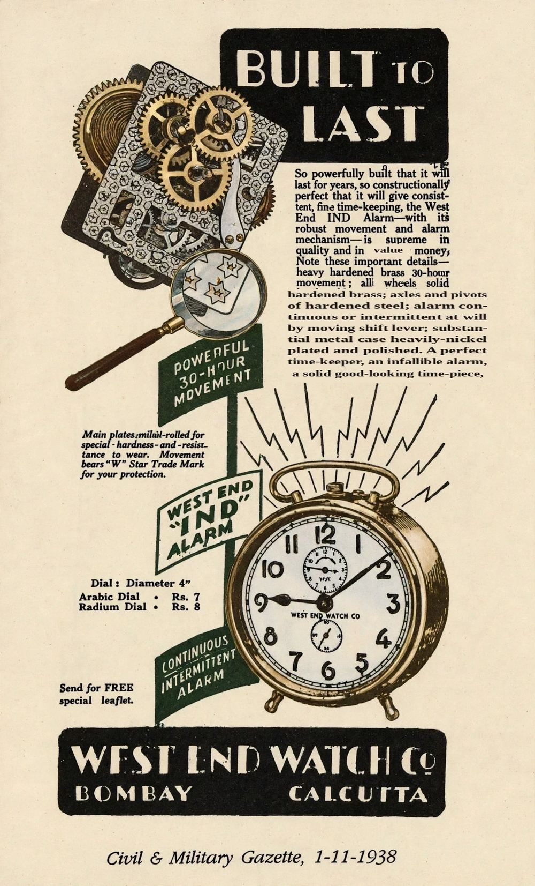
5
BUILT TO LAST — WEST END WATCH CO. Civil & Military Gazette, 1-11-1938
دیرپا بنائی گئی — ویسٹ اینڈ واچ کمپنی۔ سول اینڈ ملٹری گزٹ، یکم نومبر 1938ء
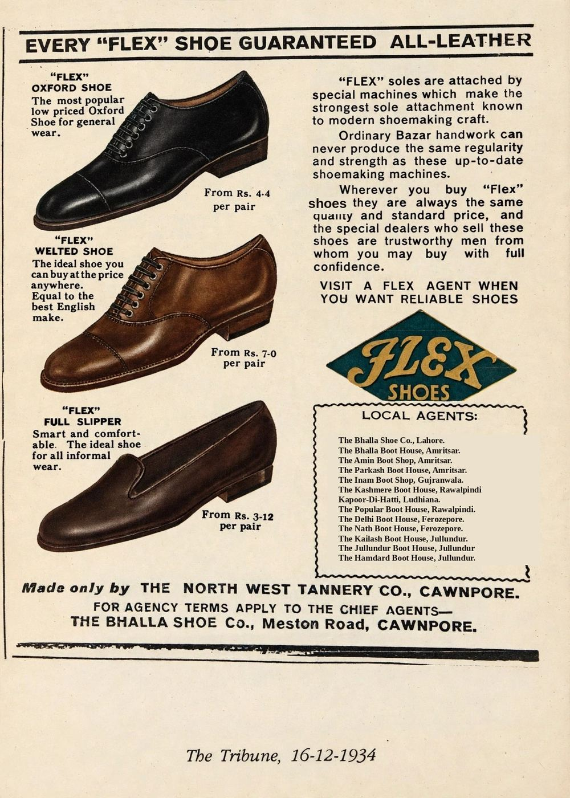
6
EVERY “FLEX” SHOE GUARANTEED ALL-LEATHER. The Tribune, 16-12-1934
ہر فلیکس جوتا مکمل چمڑے کی ضمانت کے ساتھ۔ دی ٹربیون، 16 دسمبر 1934ء
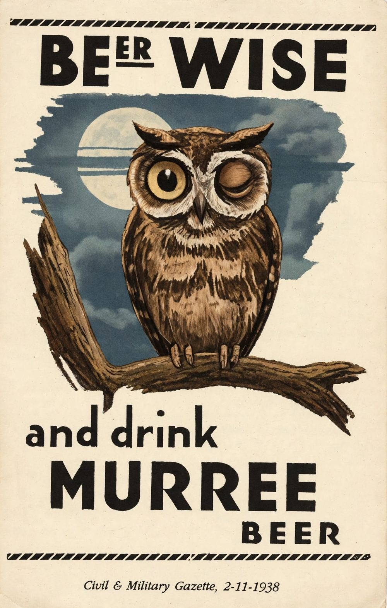
7
BEER WISE and drink MURREE BEER. Civil & Military Gazette, 2-11-1938
سمجھداری سے مری بیئر پیئیں۔ سول اینڈ ملٹری گزٹ، 2 نومبر 1938ء
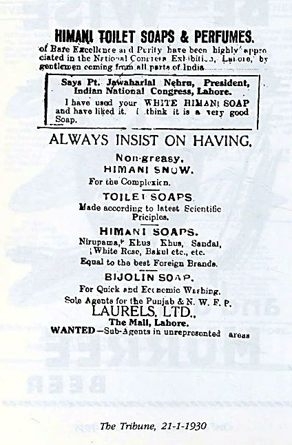
8
HIMANI TOILET SOAPS & PERFUMES. The Tribune, 21-1-1930
ہمانی ٹوائلٹ صابن اور عطر۔ دی ٹربیون، 21 جنوری 1930ء
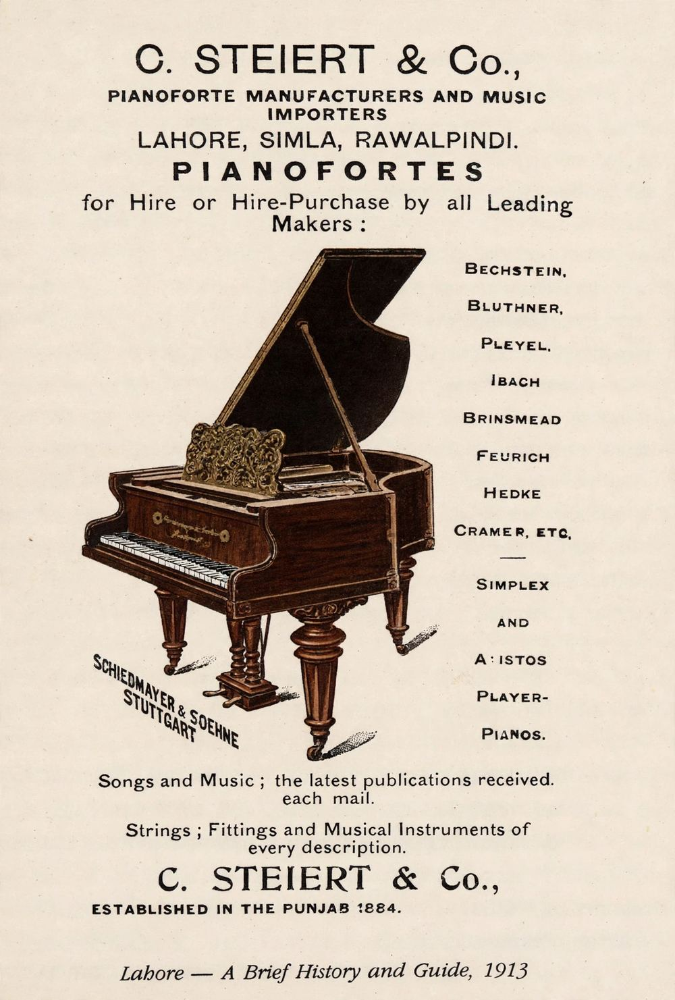
9
C. STEIERT & Co., PIANOFORTE MANUFACTURERS AND MUSIC IMPORTERS, LAHORE, SIMLA, RAWALPINDI. Lahore — A Brief History and Guide, 1913
سی اسٹیئرٹ اینڈ کمپنی، پیانو ساز اور موسیقی کے آلات درآمد کرنے والے، لاہور، شملہ، راولپنڈی۔ لاہور گائیڈ، 1913ء
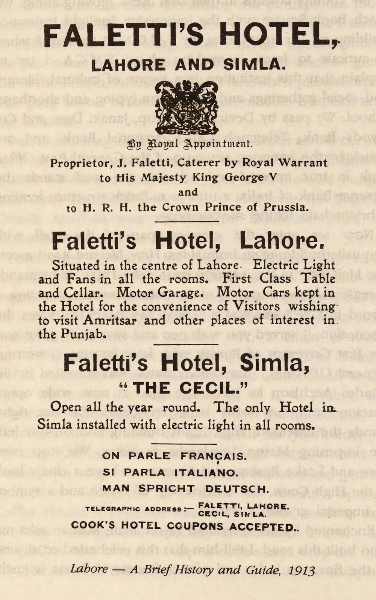
10
FALETTI'S HOTEL, LAHORE AND SIMLA. Lahore — A Brief History and Guide, 1913
فلیٹی ہوٹل، لاہور اور شملہ۔ لاہور گائیڈ، 1913ء
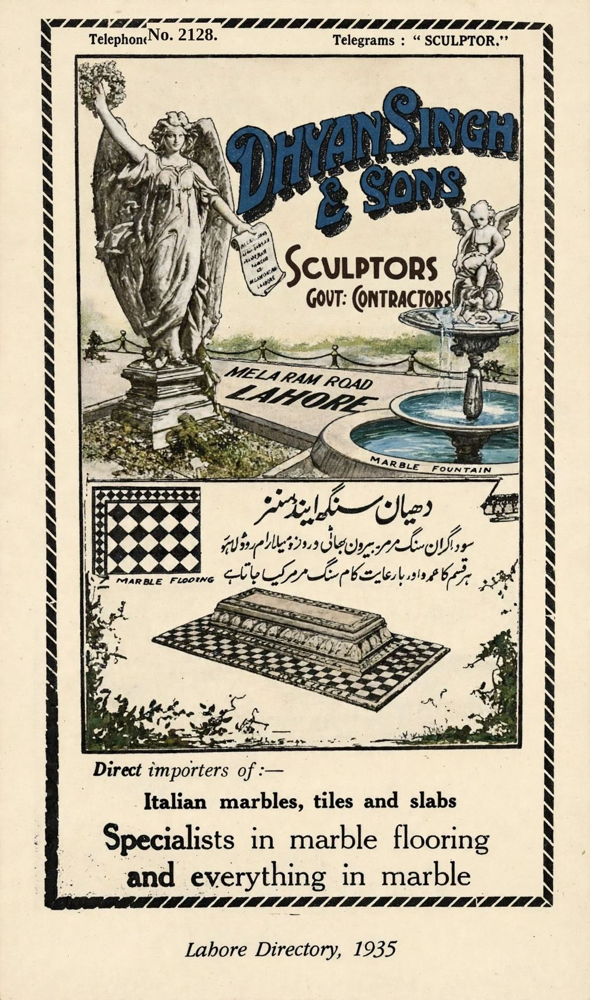
11
DHYAN SINGH & SONS, SCULPTORS, MELA RAM ROAD LAHORE. Lahore Directory, 1935
دھیان سنگھ اینڈ سنز، مجسمہ ساز، میلا رام روڈ لاہور۔ لاہور ڈائریکٹری، 1935ء
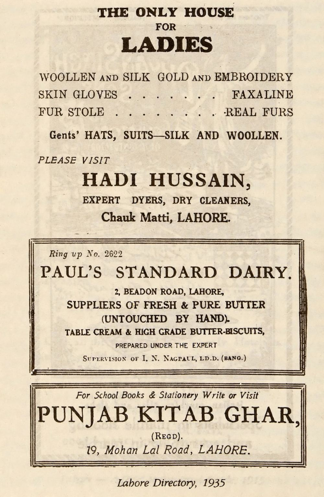
12
THE ONLY HOUSE FOR LADIES — HADI HUSSAIN, Chauk Matti, LAHORE. Lahore Directory, 1935
خواتین کے لیے واحد دکان — ہادی حسین، چوک مٹی لاہور۔ لاہور ڈائریکٹری، 1935ء
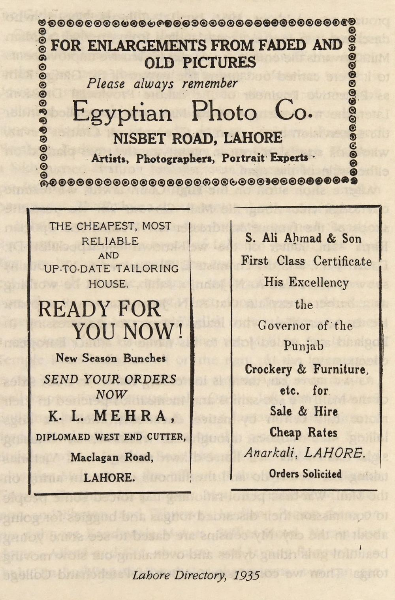
13
FOR ENLARGEMENTS FROM FADED AND OLD PICTURES — Egyptian Photo Co., NISBET ROAD, LAHORE. Lahore Directory, 1935
پرانی اور مدھم تصویروں کو بڑا کرنے کے لیے — ایجیپشین فوٹو کمپنی، نسبت روڈ لاہور۔ لاہور ڈائریکٹری، 1935ء
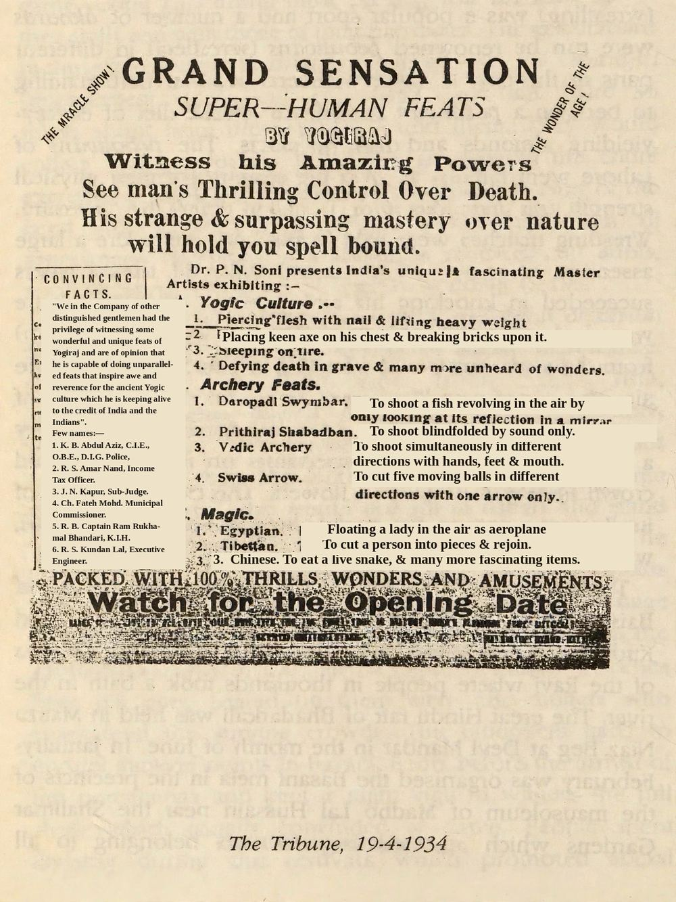
14
GRAND SENSATION — SUPER-HUMAN FEATS BY YOGIRAJ. The Tribune, 19-4-1934
زبردست سنسنی — یوگیراج کے مافوق الفطرت کرتب۔ دی ٹربیون، 19 اپریل 1934ء
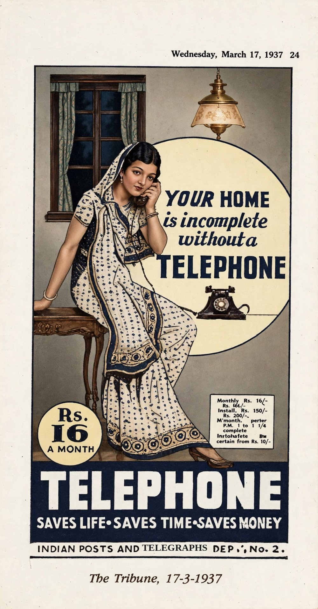
15
YOUR HOME is incomplete without a TELEPHONE — Rs. 16 A MONTH. The Tribune, 17-3-1937
آپ کا گھر ٹیلیفون کے بغیر ادھورا ہے — ماہانہ 16 روپے۔ دی ٹربیون، 17 مارچ 1937ء
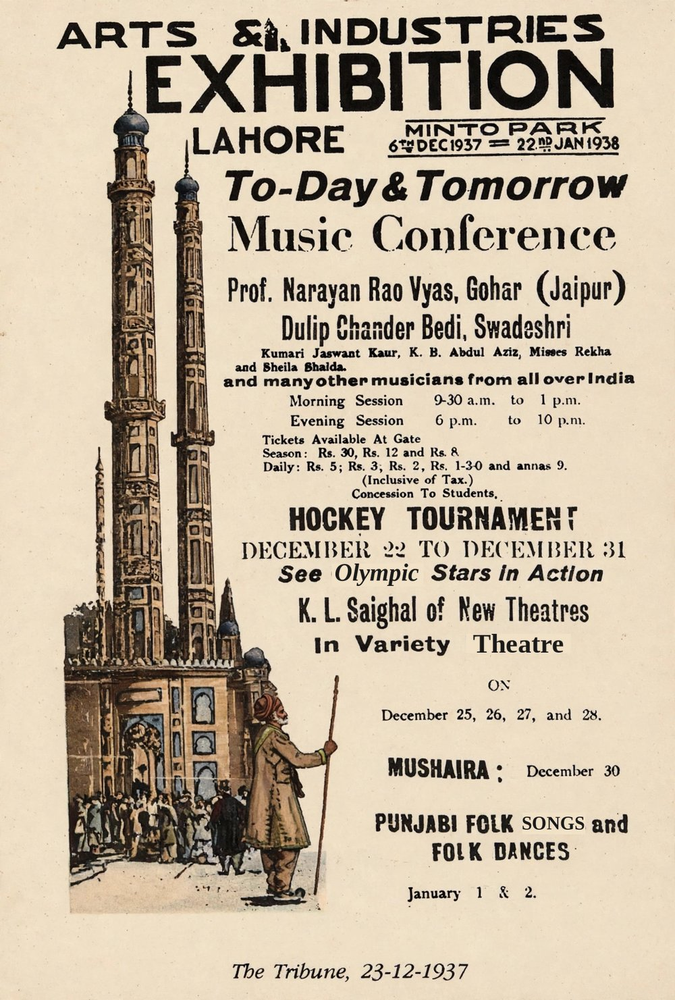
16
ARTS & INDUSTRIES EXHIBITION LAHORE — MINTO PARK 6TH DEC 1937 — 22ND JAN 1938. The Tribune, 23-12-1937
فنون و صنعت نمائش لاہور — منٹو پارک، 6 دسمبر 1937ء تا 22 جنوری 1938ء۔ دی ٹربیون، 23 دسمبر 1937ء
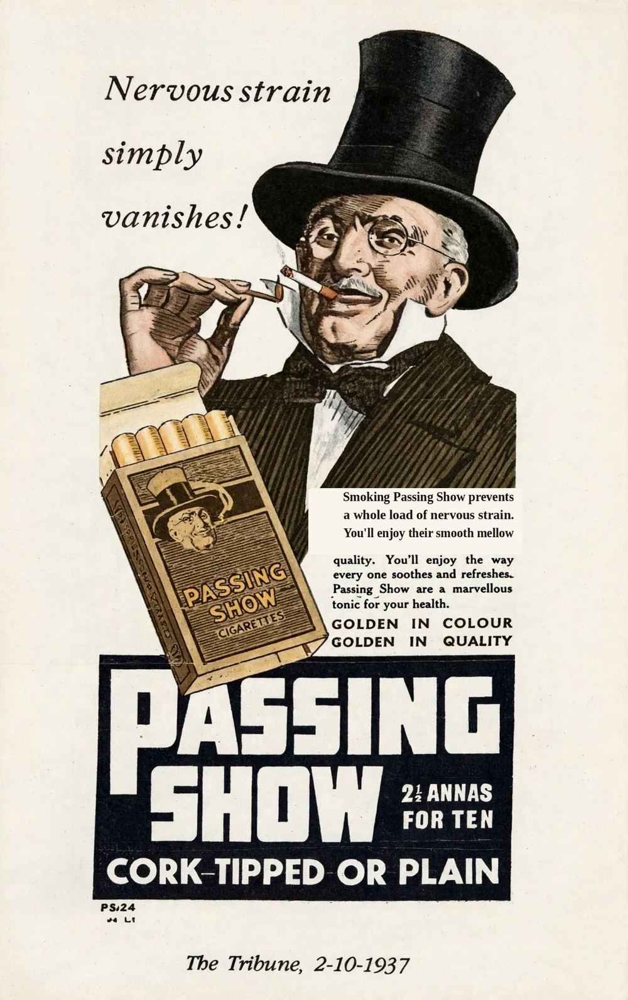
17
Nervous strain simply vanishes! — PASSING SHOW CIGARETTES. The Tribune, 2-10-1937
ذہنی دباؤ ختم ہو جاتا ہے! — پاسنگ شو سگریٹ۔ دی ٹربیون، 2 اکتوبر 1937ء
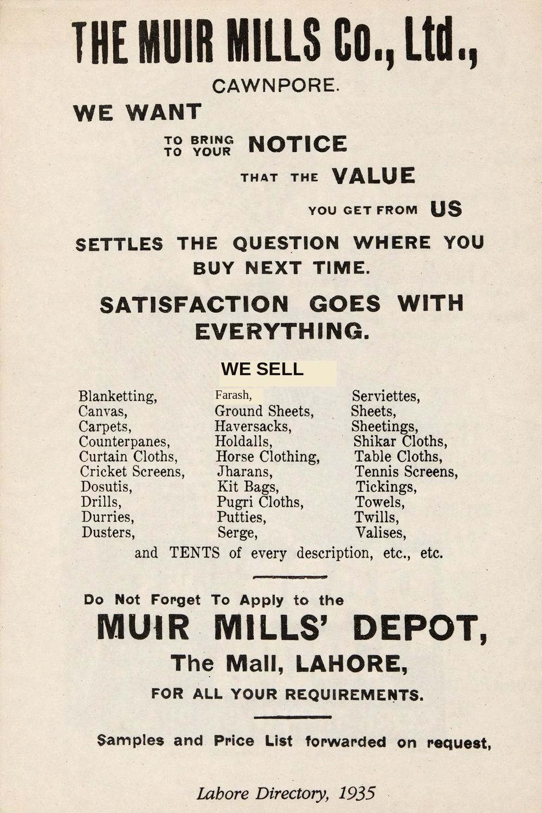
18
THE MUIR MILLS Co., Ltd., CAWNPORE — MUIR MILLS' DEPOT, The Mall, LAHORE. Lahore Directory, 1935
میور ملز کمپنی لمیٹڈ، کانپور — میور ملز ڈپو، مال روڈ لاہور۔ لاہور ڈائریکٹری، 1935ء
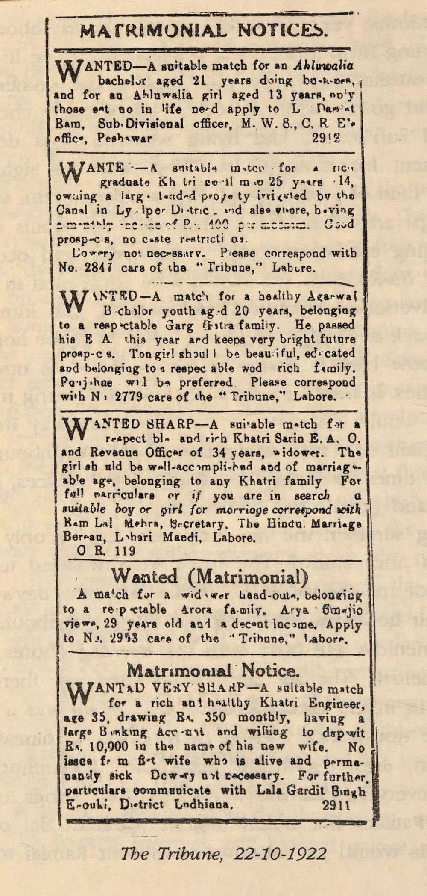
19
MATRIMONIAL NOTICES. The Tribune, 22-10-1922
رشتوں کے اشتہار۔ دی ٹربیون، 22 اکتوبر 1922ء
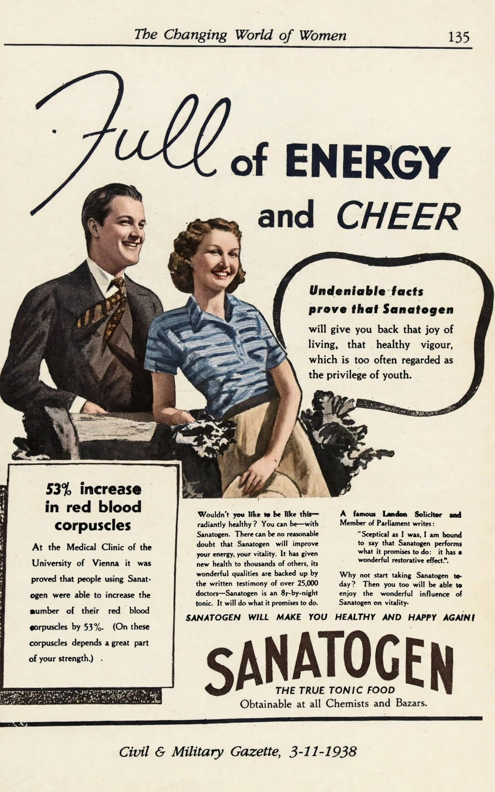
20
Full of ENERGY and CHEER — SANATOGEN, THE TRUE TONIC FOOD. Civil & Military Gazette, 3-11-1938
توانائی اور خوشی سے بھرپور — سینیٹوجن، اصل طاقت بخش غذا۔ سول اینڈ ملٹری گزٹ، 3 نومبر 1938ء
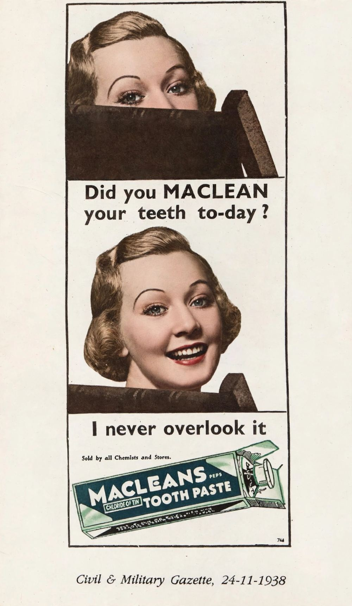
21
Did you MACLEAN your teeth to-day? — MACLEANS TOOTH PASTE. Civil & Military Gazette, 24-11-1938
کیا آج آپ نے میکلین سے دانت صاف کیے؟ — میکلینز ٹوتھ پیسٹ۔ سول اینڈ ملٹری گزٹ، 24 نومبر 1938ء
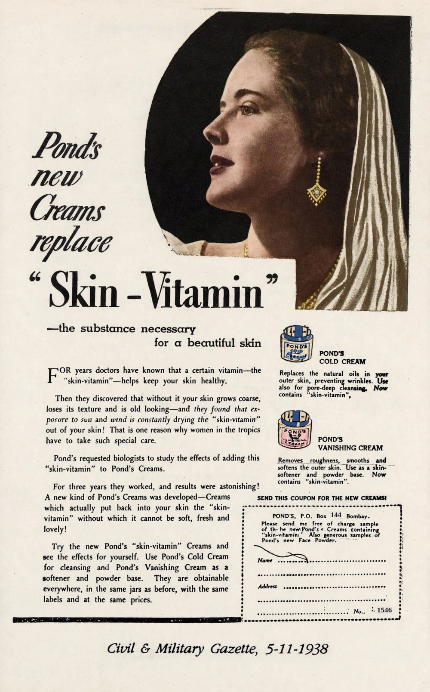
22
Pond's new Creams replace “Skin-Vitamin”. Civil & Military Gazette, 5-11-1938
پونڈز کی نئی کریمیں جلد کی وٹامن کی کمی پوری کرتی ہیں۔ سول اینڈ ملٹری گزٹ، 5 نومبر 1938ء
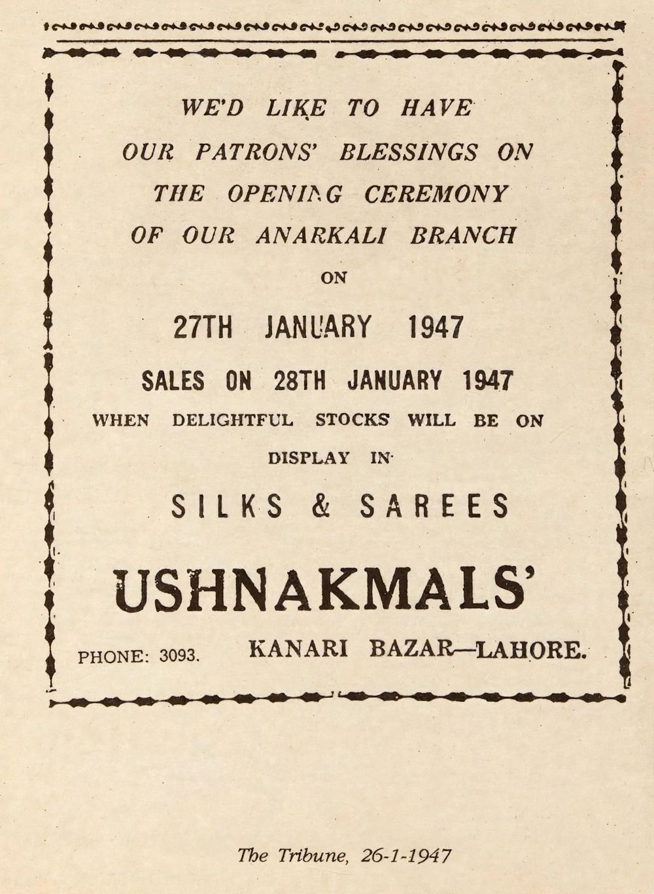
23
USHNAKMALS' — SILKS & SAREES, KANARI BAZAR—LAHORE. The Tribune, 26-1-1947
اشنک ملز — ریشم اور ساڑھیاں، کناری بازار لاہور۔ دی ٹربیون، 26 جنوری 1947ء
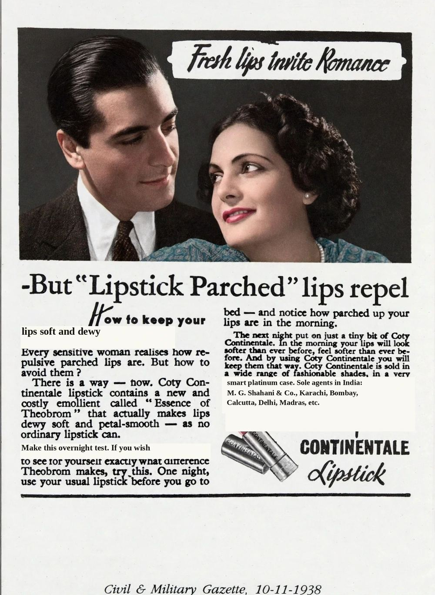
24
Fresh lips invite Romance — CONTINENTALE Lipstick. Civil & Military Gazette, 10-11-1938
تازہ ہونٹ محبت کی دعوت دیتے ہیں — کانٹیننٹال لپ اسٹک۔ سول اینڈ ملٹری گزٹ، 10 نومبر 1938ء
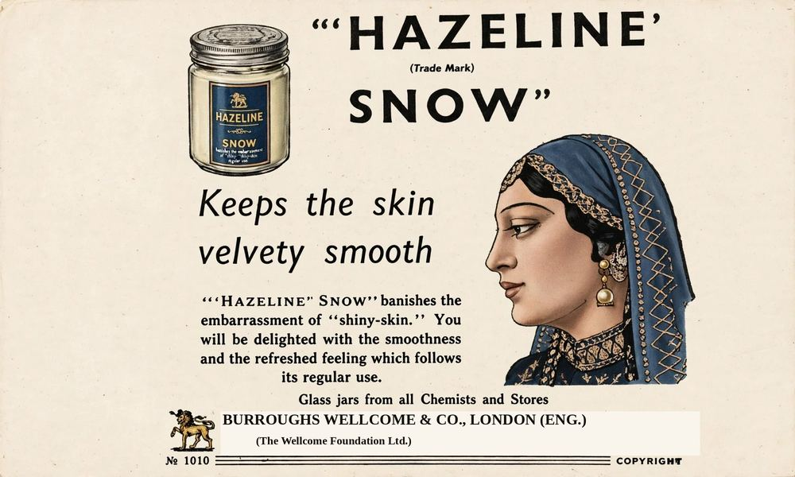
25
“HAZELINE SNOW” — Keeps the skin velvety smooth. BURROUGHS WELLCOME & CO., LONDON (ENG.)
ہیزلین سنو — جلد کو مخمل کی طرح نرم رکھتی ہے۔ بروز ویلکم اینڈ کمپنی، لندن
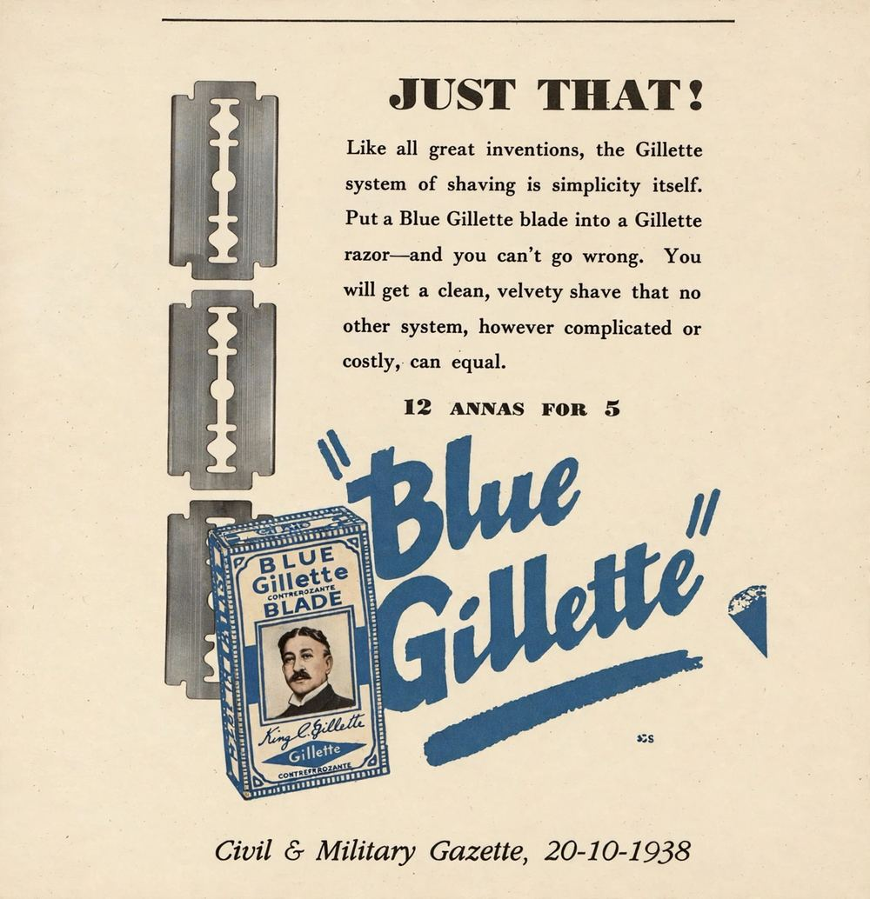
26
JUST THAT! — “Blue Gillette” BLADE. Civil & Military Gazette, 20-10-1938
بس یہی! — بلیو جلیٹ بلیڈ۔ سول اینڈ ملٹری گزٹ، 20 اکتوبر 1938ء
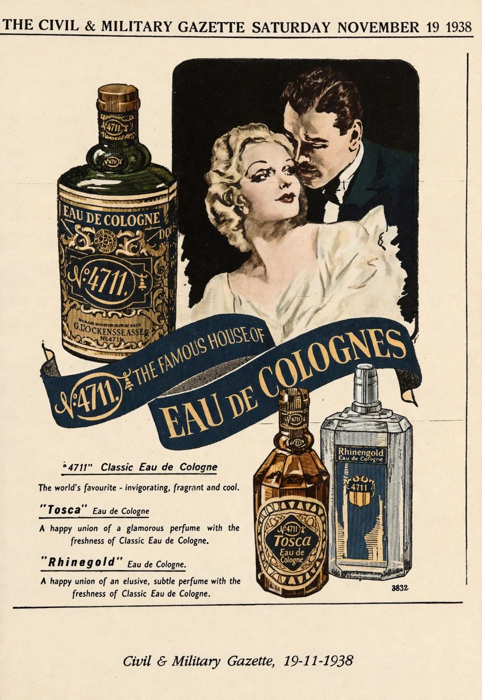
27
THE FAMOUS HOUSE OF EAU DE COLOGNES — “4711” Classic Eau de Cologne. Civil & Military Gazette, 19-11-1938
مشہور خوشبوؤں کا گھر — 4711 کلاسک کولون۔ سول اینڈ ملٹری گزٹ، 19 نومبر 1938ء
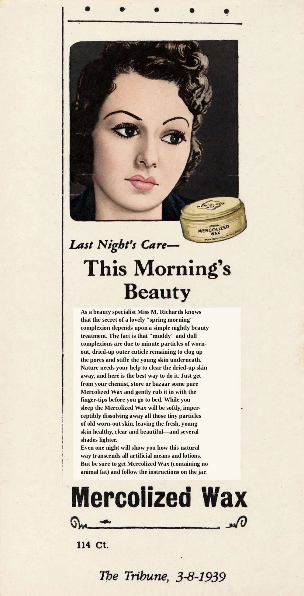
28
Last Night's Care— This Morning's Beauty — Mercolized Wax. The Tribune, 3-8-1939
رات کی دیکھ بھال — صبح کی خوبصورتی — مرکولائزڈ ویکس۔ دی ٹربیون، 3 اگست 1939ء
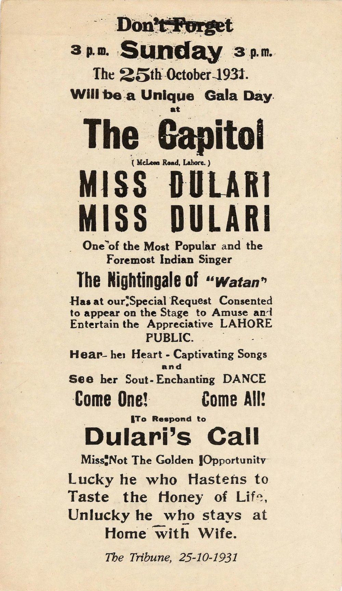
29
MISS DULARI — The Nightingale of “Watan” at The Capitol (McLeod Road, Lahore). The Tribune, 25-10-1931
مس دلاری — وطن کی بلبل، کیپٹل سینما (میکلوڈ روڈ لاہور) میں۔ دی ٹربیون، 25 اکتوبر 1931ء
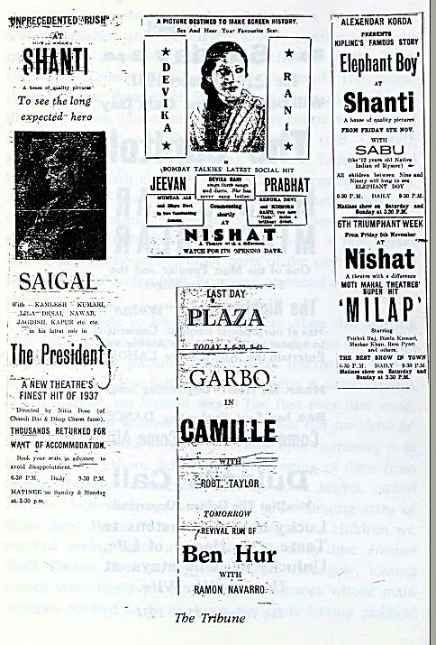
30
SHANTI — SAIGAL in The President; NISHAT — DEVIKA RANI in JEEVAN; PLAZA — GARBO in CAMILLE. The Tribune
شانتی سینما میں سہگل کی فلم دی پریذیڈنٹ، نشاط میں دیویکا رانی کی جیون، پلازہ میں گاربو کی کیمل۔ دی ٹربیون
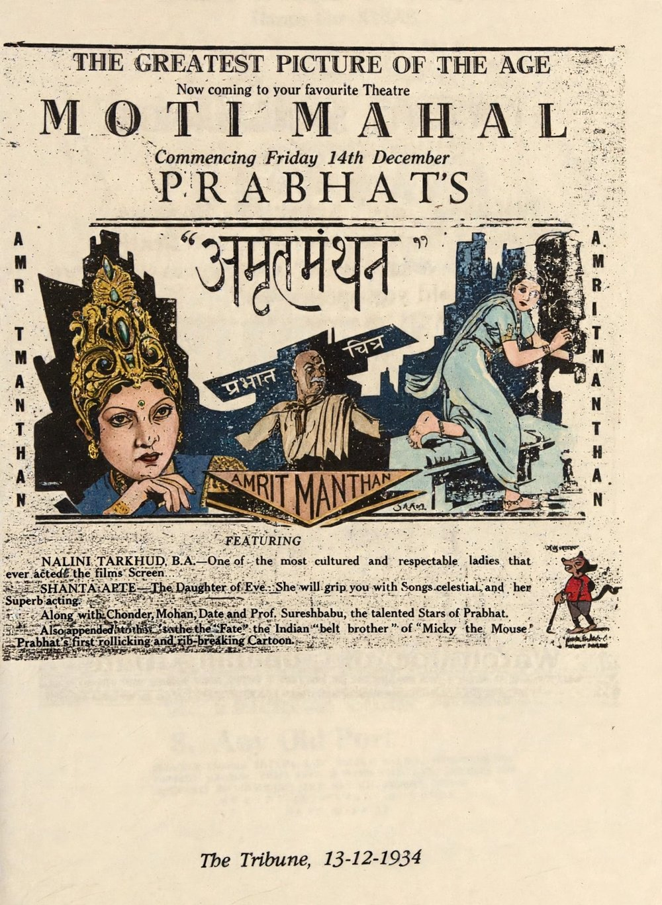
31
MOTI MAHAL — PRABHAT'S AMRIT MANTHAN. The Tribune, 13-12-1934
موتی محل سینما — پربھات کی فلم امرت منتھن۔ دی ٹربیون، 13 دسمبر 1934ء
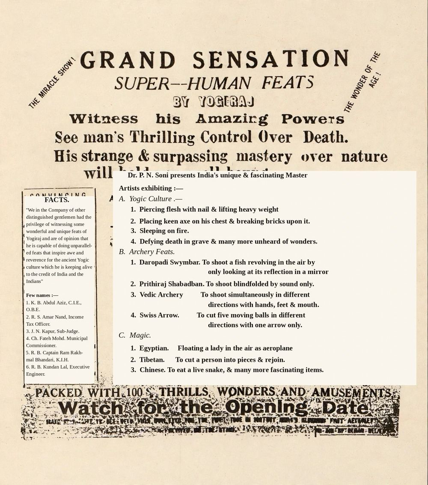
32
LAURAL & HARDY at THE PLAZA — Beau Hunks, Chickens Come Home, Any Old Port. The Tribune, 20-12-1934
پلازہ سینما میں لارل اینڈ ہارڈی کی مزاحیہ فلمیں۔ دی ٹربیون، 20 دسمبر 1934ء
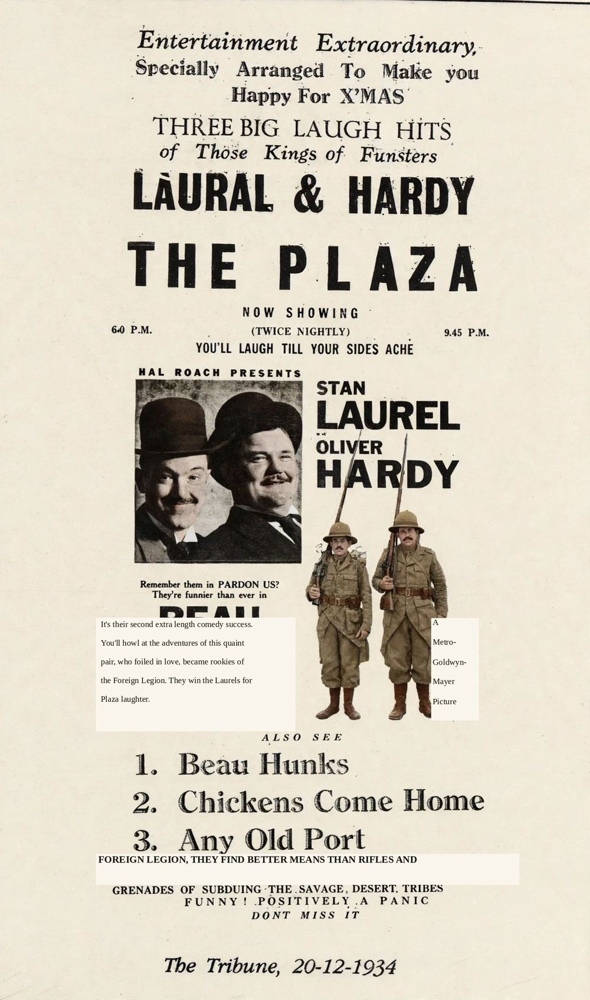
33
MISS 1933 at Majestic Talkies — Ranjit's Wonderful Super-Production. The Tribune, 24-5-1934
مجسٹک ٹاکیز میں فلم مس 1933 — رنجیت کی شاہکار پیشکش۔ دی ٹربیون، 24 مئی 1934ء
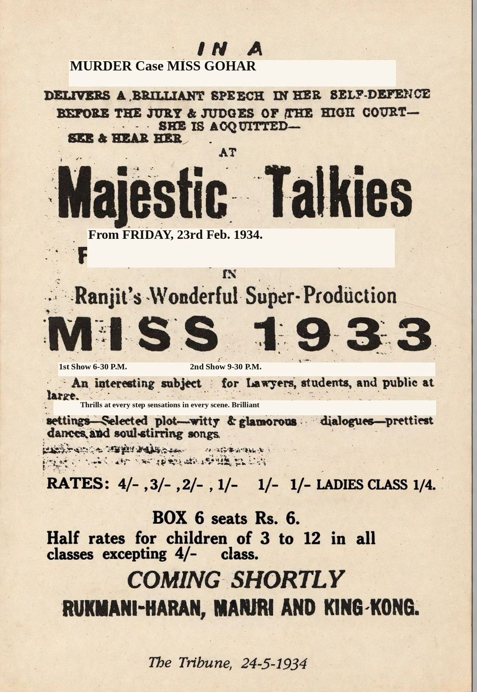
34
First Picture in Punjabi — SHEILA alias PIND-DI-KURI at PALACE. The Tribune, 26-3-1937
پنجابی کی پہلی فلم — شیلا عرف پنڈ دی کڑی، پیلس سینما میں۔ دی ٹربیون، 26 مارچ 1937ء
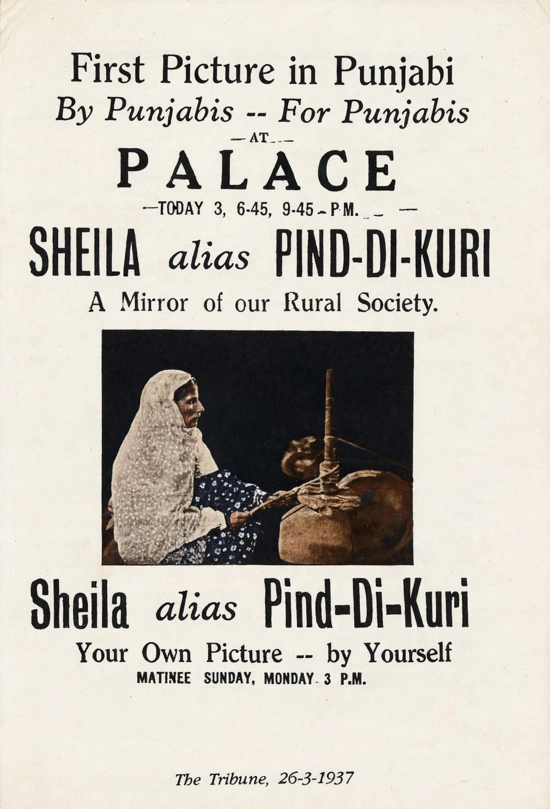
35
ALAM-ARA — A Complete Indian Talking Drama at THE CAPITOL. The Tribune, Wednesday, April 15, 1931
عالم آرا — پہلی مکمل ہندوستانی بولتی فلم، کیپٹل سینما میں۔ دی ٹربیون، 15 اپریل 1931ء

36
K. L. SAIGAL OF New Theatres Calcutta — Coming in Person AT VARIETY THEATRE, Minto Park, LAHORE. THE TRIBUNE, Thursday, December 23, 1937
کے ایل سہگل، نیو تھیٹرز کلکتہ — منٹو پارک لاہور کے ورائٹی تھیٹر میں ذاتی طور پر آ رہے ہیں۔ دی ٹربیون، 23 دسمبر 1937ء
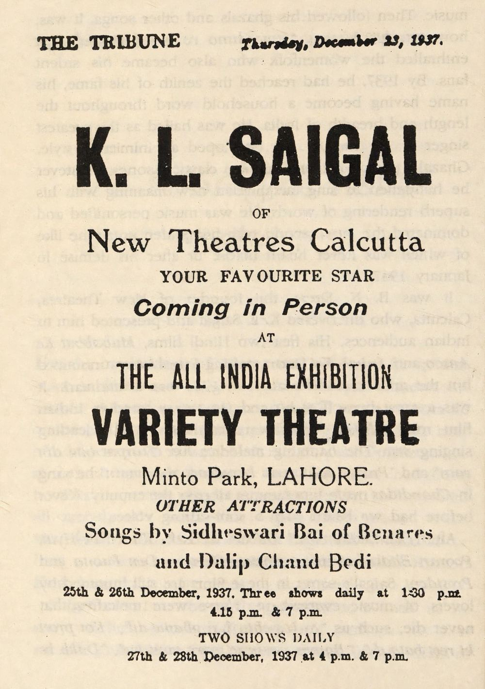
37
K. L. SAIGAL OF New Theatres Calcutta — Coming in Person AT VARIETY THEATRE, Minto Park, LAHORE. NEXT CHANGE RATTAN BAI Film Star
کے ایل سہگل، نیو تھیٹرز کلکتہ — ورائٹی تھیٹر منٹو پارک لاہور میں۔ اگلی پیشکش فلمی ستارہ رتن بائی
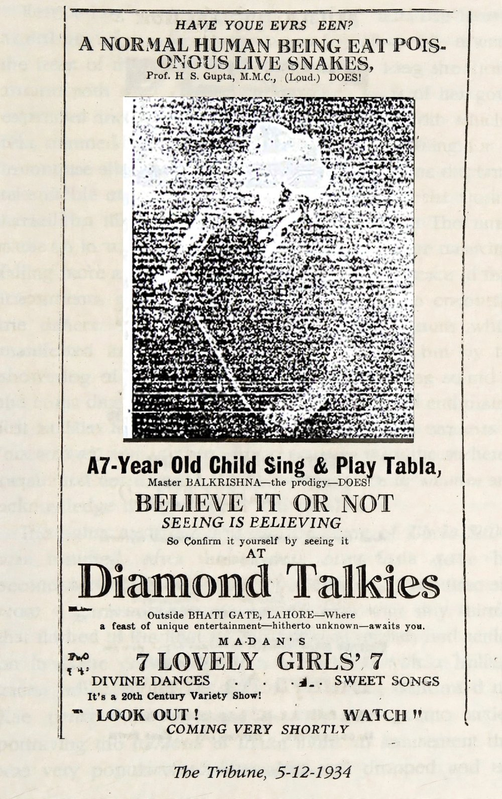
38
A7-Year Old Child Sing & Play Tabla, Master BALKRISHNA—the prodigy—DOES! AT Diamond Talkies, Outside BHATI GATE, LAHORE. The Tribune, 5-12-1934
سات سالہ بچہ بالکرشنا گاتا اور طبلہ بجاتا ہے! ڈائمنڈ ٹاکیز، بھاٹی دروازے کے باہر لاہور۔ دی ٹربیون، 5 دسمبر 1934ء
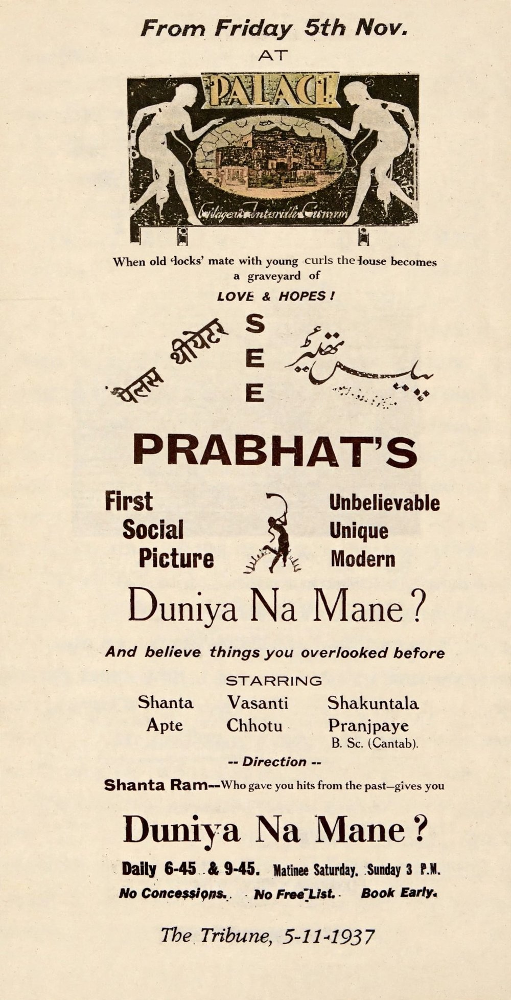
39
PRABHAT'S Duniya Na Mane? at PALACE. The Tribune, 5-11-1937
پربھات کی فلم دنیا نہ مانے؟ پیلس سینما میں۔ دی ٹربیون، 5 نومبر 1937ء
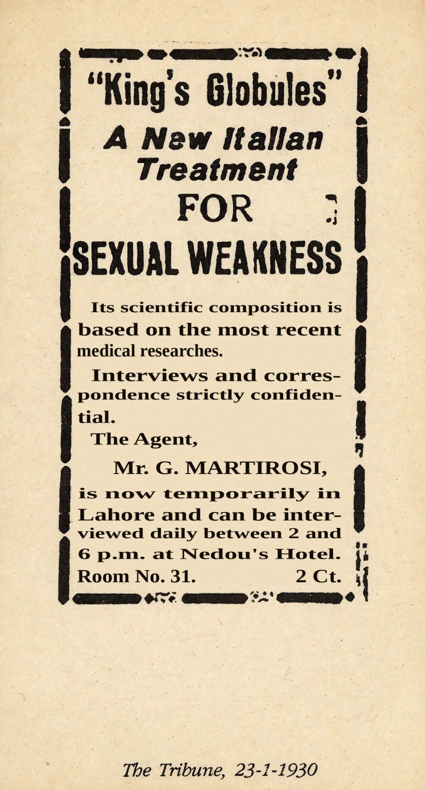
40
“King's Globules” — A New Italian Treatment FOR SEXUAL WEAKNESS. The Tribune, 23-1-1930
کنگز گلوبیولز — جنسی کمزوری کا نیا اطالوی علاج۔ دی ٹربیون، 23 جنوری 1930ء
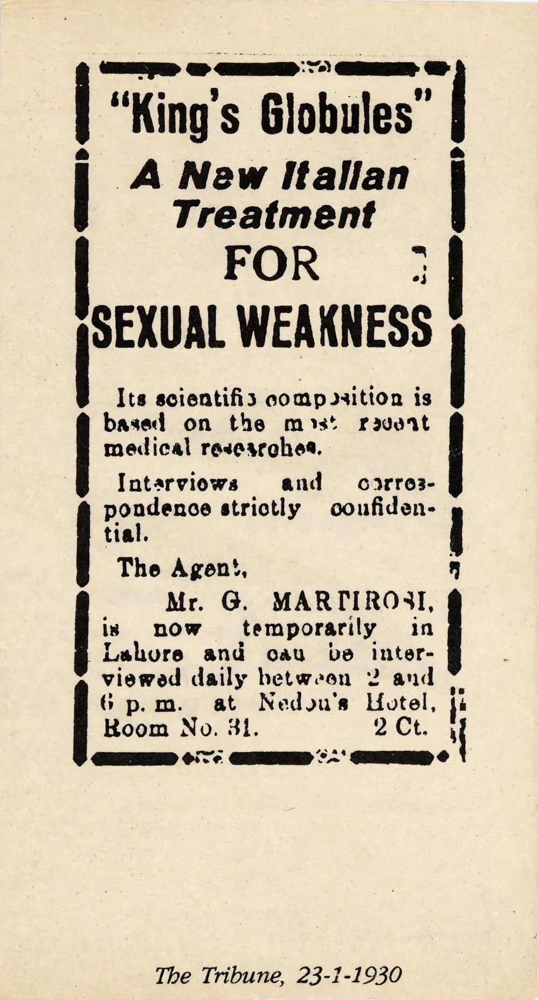
41
Sidh-Makara — CONTAINING DIAMOND & GOLD. THE AYURVEDIC PHARMACEUTICAL CO. LTD., LAHORE
سدھ مکر — جس میں ہیرا اور سونا شامل ہے۔ دی آیورویدک فارماسیوٹیکل کمپنی لمیٹڈ، لاہور
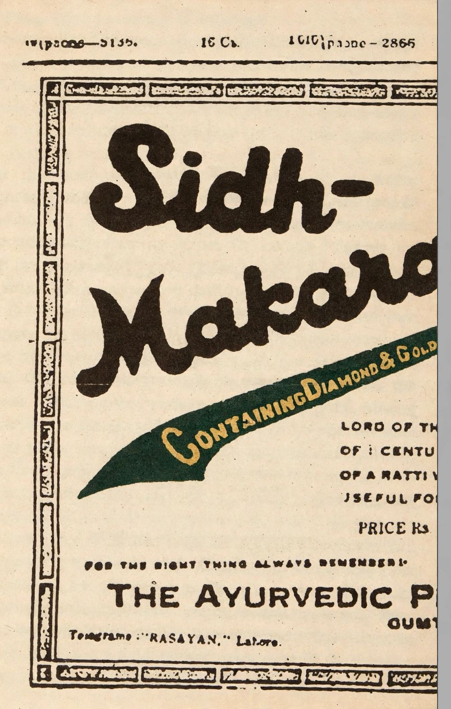
42
means Vitality, Energy, Virility, Vigour & Strength. Rs. 10/- FOR 48 DOSES. CEUTICAL CO. LTD.
یعنی طاقت، توانائی، مردانگی، جوش اور قوت۔ 48 خوراکوں کی قیمت 10 روپے
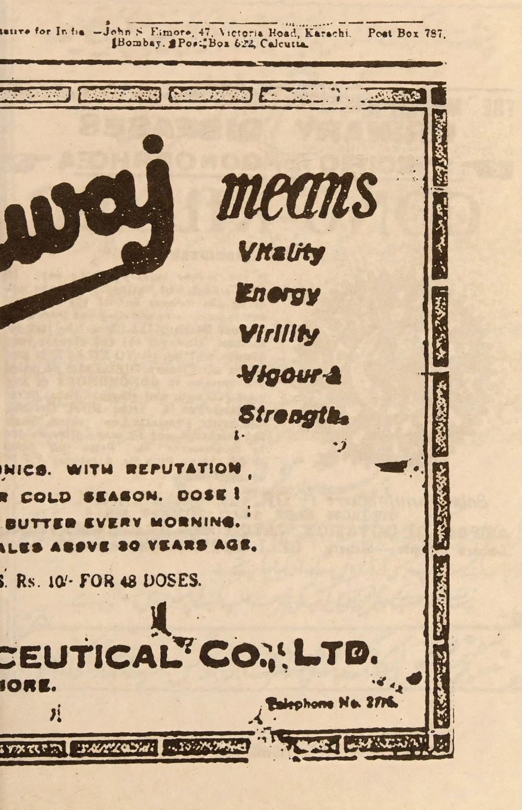
43
GONO-KILLER — SPECIFIC for GONORRHOEA. The Tribune, 28-5-1933
گونو کلر — سوزاک کی خاص دوا۔ دی ٹربیون، 28 مئی 1933ء
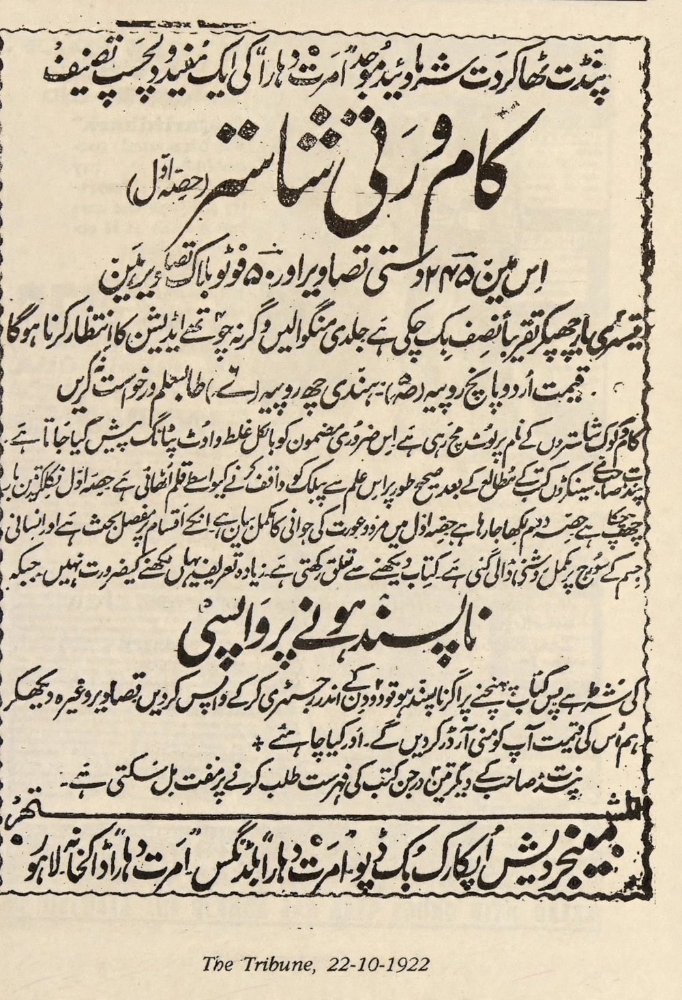
44
کام رنی شاستر (حصہ اول) — The Tribune, 22-10-1922
کام رنی شاستر (حصہ اول) — دی ٹربیون، 22 اکتوبر 1922ء
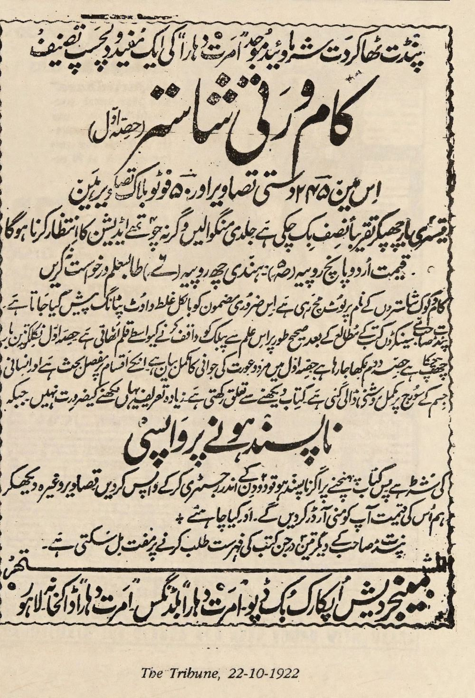
45
A Voice from America — “Amritdhara” — Elixir of Life. Lahore Directory, 1916
امریکہ سے آواز — امرت دھارا، زندگی کا امرت۔ لاہور ڈائریکٹری، 1916ء
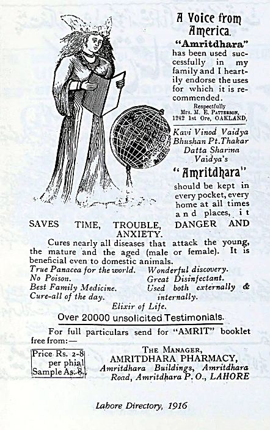
46
GLANDS MAKE YOU WHAT YOU ARE OLD OR YOUNG! — SEX-TROUBLES AND THEIR TREATMENT. The Tribune, 2-1-1937
غدود ہی آپ کو جوان یا بوڑھا بناتے ہیں! — جنسی مسائل اور ان کا علاج۔ دی ٹربیون، 2 جنوری 1937ء

47
World Record over 300 — Don't be Vague, ASK FOR Haig. Civil & Military Gazette, 8-11-1938
300 سے زائد کا عالمی ریکارڈ — مبہم نہ رہیں، ہیگ مانگیں۔ سول اینڈ ملٹری گزٹ، 8 نومبر 1938ء
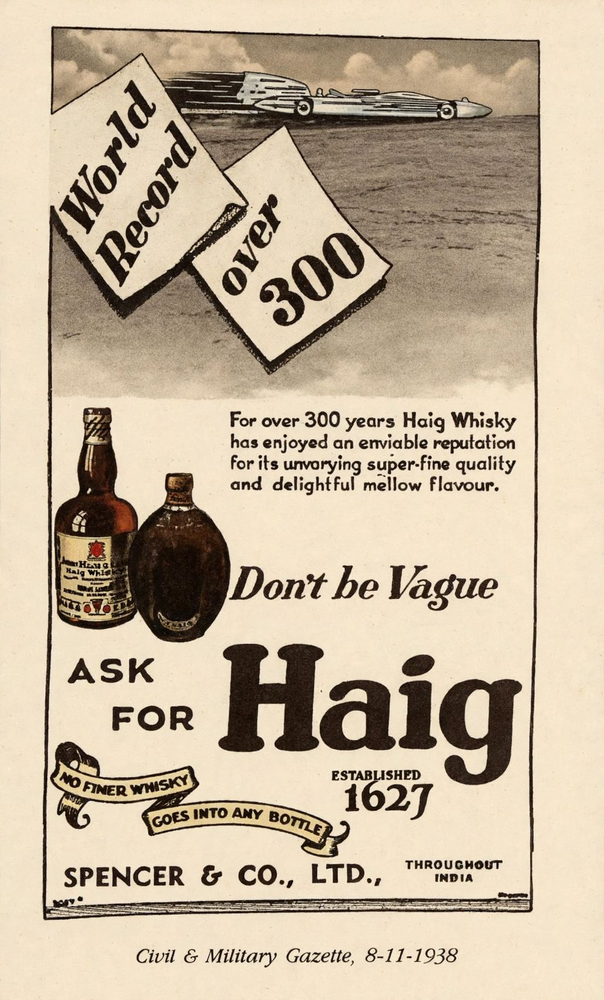
48
Civil & Military Gazette, 10-11-1938
سول اینڈ ملٹری گزٹ، 10 نومبر 1938ء

49
Civil & Military Gazette, 19-11-1938
سول اینڈ ملٹری گزٹ، 19 نومبر 1938ء
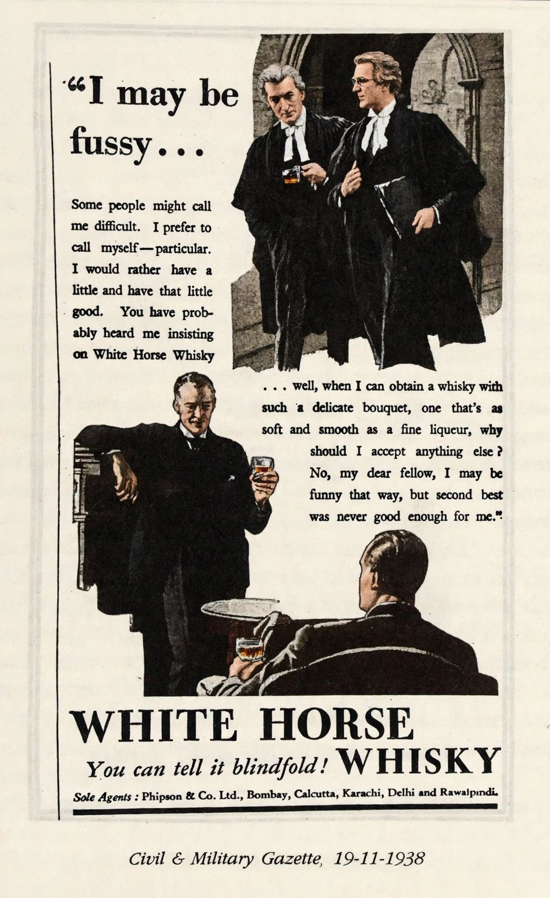
50
Civil & Military Gazette, 24-11-1938
سول اینڈ ملٹری گزٹ، 24 نومبر 1938ء
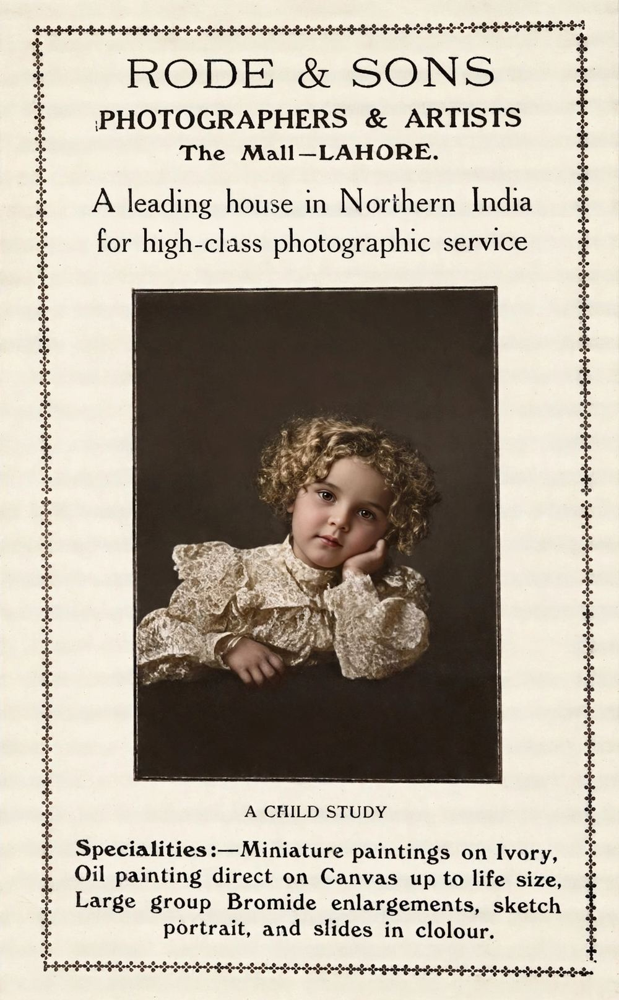
51
A CHILD STUDY
بچے کی تصویر

52
COOKE AND KELVEY
کوک اینڈ کیلوی، لندن ہاؤس لاہور
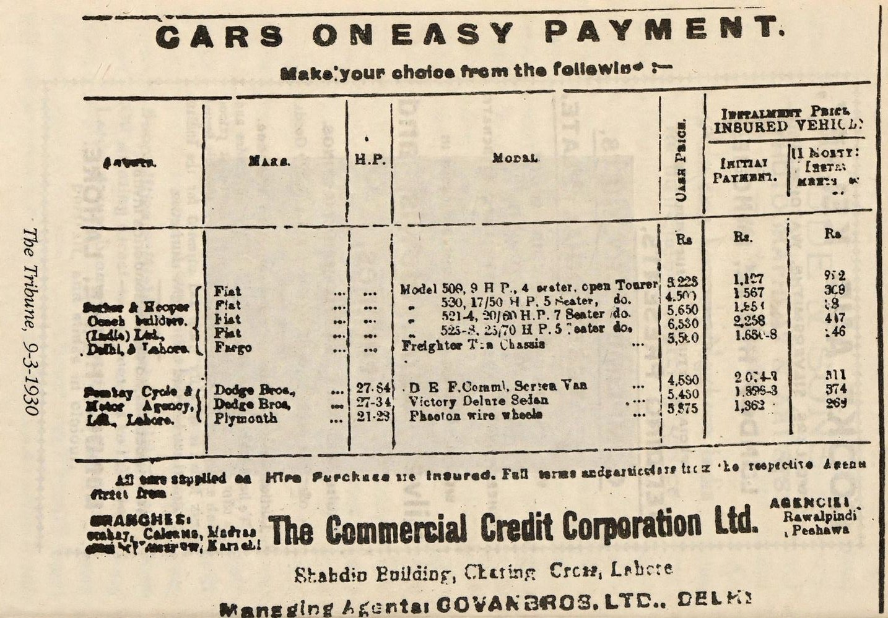
53
The Tribune, 9-3-1930
دی ٹریبیون، 9 مارچ 1930ء

54
Lahore — A Brief History and Guide, 1913
لاہور — مختصر تاریخ و رہنما، 1913ء
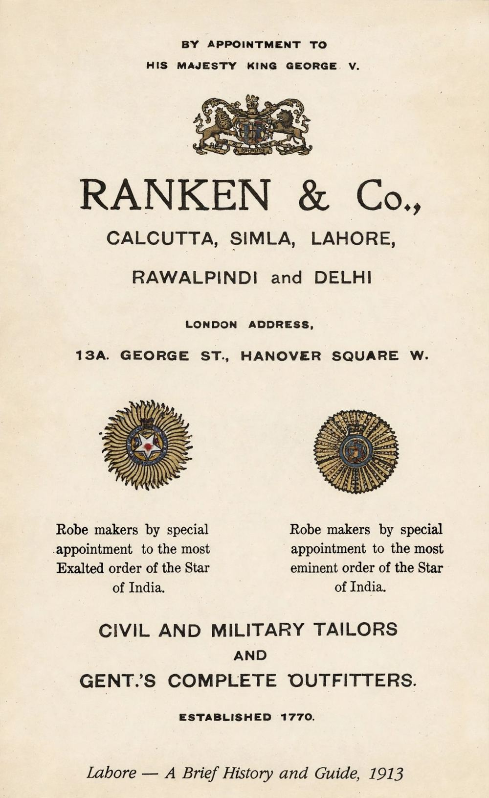
55
The Tribune, 26-10-1937
دی ٹریبیون، 26 اکتوبر 1937ء
56
Lahore — A Brief History and Guide, 1913
لاہور — مختصر تاریخ و رہنما، 1913ء
57
Civil & Military Gazette, 2-11-1938
سول اینڈ ملٹری گزٹ، 2 نومبر 1938ء

58
The Tribune, 21-4-1947
دی ٹریبیون، 21 اپریل 1947ء
59
The Tribune, 6-1-1947
دی ٹریبیون، 6 جنوری 1947ء

60
Civil & Military Gazette, 8-11-1938
سول اینڈ ملٹری گزٹ، 8 نومبر 1938ء
61
Civil & Military Gazette, 25-11-1938
سول اینڈ ملٹری گزٹ، 25 نومبر 1938ء
62
MONGA AUTOMOBILES
مونگا آٹوموبائلز، لاہور
63
Civil & Military Gazette, 12-10-1938
سول اینڈ ملٹری گزٹ، 12 اکتوبر 1938ء
64
The Tribune, 19-3-1937
دی ٹریبیون، 19 مارچ 1937ء
65
The Tribune, 6-6-1934
دی ٹریبیون، 6 جون 1934ء

66
BOMBS WILL BE ANSWERED WITH BOMBS
بموں کا جواب بموں سے دیا جائے گا
67
CONGRESS PRESIDENT'S ADDRESS. OPEN CONSPIRACY TO FREE INDIA.
کانگریس صدر کا خطبہ — ہندوستان کی آزادی کی کھلی سازش
68
ASSEMBLY BOMB OUTRAGE. Appeal Dismissed by High Court. LIFE SENTENCE UPHELD.
اسمبلی بم دھماکا — ہائی کورٹ نے اپیل مسترد کر دی، عمر قید برقرار

69
General view from Badshahi Masjid Lahore. Photograph (c.1920).
بادشاہی مسجد لاہور سے عمومی منظر، تصویر تقریباً 1920ء
70
A view of Badshahi Masjid (Royal Mosque) and Ranjit Singh's Samadhi. Water-Colour by H.A. Oldfield (1848).
بادشاہی مسجد اور رنجیت سنگھ کی سمادھی کا منظر، ایچ اے اولڈ فیلڈ کی آبی رنگ تصویر، 1848ء
71
The Tomb of Emperor Jahangir at Shahdara, on the Ravi. Coloured lithograph from a drawing by C.S. Hardinge Lahore, March 1846.
شاہدرہ میں دریائے راوی کنارے شہنشاہ جہانگیر کا مقبرہ، سی ایس ہارڈنگ کی تصویر، مارچ 1846ء
72
Proclamation Ceremony of King George VI at Government House, Lahore. Photograph, 1936.
گورنمنٹ ہاؤس لاہور میں بادشاہ جارج ششم کے اعلان کی تقریب، تصویر 1936ء

73
A Bazar scene. Photograph (c. 1920).
بازار کا منظر، تصویر تقریباً 1920ء
74
View of Lahore from Shahara. Water-colour by William Simpson. (1860).
شاہدرہ سے لاہور کا منظر، ولیم سمپسن کی آبی رنگ تصویر، 1860ء
75
Lahore city from right side of the Ravi river. Water-colour by H.A.Oldfield (1849)
دریائے راوی کے دائیں کنارے سے لاہور شہر، ایچ اے اولڈ فیلڈ کی آبی رنگ تصویر، 1849ء

76
Zamzamah (Bhangian Wali Tope). Photograph (c. 1920).
زمزمہ توپ (بھنگیاں والی توپ)، تصویر تقریباً 1920ء
77
Government College, Lahore. Photograph (c. 1940).
گورنمنٹ کالج لاہور، تصویر تقریباً 1940ء
78
Woman acrobat with a drummer. -Yani Bazigaran' inscribed in Persian Script by a Lahore artist (c. 1860). (top) Distiller and a man drinking. by a Lahore Artist (c. 1860).
ڈھولک والے کے ساتھ بازی گر عورت، اوپر شراب کشید کرنے والا اور پینے والا، لاہوری مصور کی تصویریں تقریباً 1860ء
79
روایتی لباس میں مرد و خواتین کا گروپ، نقش و نگار والے دروازے کے سامنے
80
Dancing girls of Lahore by an unknown artist (c. 1838).
لاہور کی رقاصائیں، نامعلوم مصور کی تصویر تقریباً 1838ء
81
Dhobis (washermen) at work near the Lahore fort. Lithograph from a sketch by an unidentified European lady, Lahore (c. 1850).
قلعہ لاہور کے قریب کام کرتے دھوبی، نامعلوم یورپی خاتون کے خاکے سے بنی تصویر تقریباً 1850ء
82
The view across the Old Race-Course. Lithograph based upon a sketch by an unidentified European lady, Lahore (c. 1852).
پرانے ریس کورس کے پار کا منظر، نامعلوم یورپی خاتون کے خاکے سے بنی تصویر تقریباً 1852ء

83
The Marble pavilion in the Hazuri Bagh. Coloured lithograph from a drawing by C. S. Hardinge, Lahore, March 1846.
حضوری باغ کی سنگ مرمر کی بارہ دری، سی ایس ہارڈنگ کی تصویر، مارچ 1846ء

84
Street scene in Lahore. Lithograph based upon a sketch by an unidentified lady, Lahore (c. 1852). Published in Original Sketches in the Punjab, London, (1854).
لاہور کی گلی کا منظر، نامعلوم خاتون کے خاکے سے بنی تصویر تقریباً 1852ء، لندن سے 1854ء میں شائع
85
Government House, Lahore. Engraving from the Illustrated London News. 27 November 1868.
گورنمنٹ ہاؤس لاہور، السٹریٹڈ لندن نیوز کی تصویر، 27 نومبر 1868ء
86
Lord Minto leads his British Regiment in the old city. Photograph (c. 1910)
لارڈ منٹو اندرون شہر میں اپنی برطانوی رجمنٹ کی قیادت کرتے ہوئے، تصویر تقریباً 1910ء

87
Opening of the Punjab Exhibition, Lahore, 1864. (The Illustrated London News)
پنجاب نمائش لاہور کا افتتاح، 1864ء
88
Inside the Exhibition Hall. (The Illustrated London News)
نمائش ہال کے اندر کا منظر

89
Men preparing and smoking Indian hemp. By a Lahore artist (c 1860).
بھنگ تیار کرتے اور پیتے ہوئے آدمی، لاہوری مصور کی تصویر تقریباً 1860ء
90
Concert at the Open Air Theatre, Lawrence Gardens, Lahore, 1942.
لارنس گارڈنز لاہور کے کھلے تھیٹر میں موسیقی کی محفل، 1942ء
91
Illuminations at Shalimar Gardens. The Royal Tour Souvenir Album, 1905-06.
شالامار باغ میں چراغاں، شاہی دورے کی یادگاری البم، 1905ء تا 1906ء
92
Rattan Chand Temple and Tank outside Shahlani Gate. Photograph, (c. 1880).
شاہ عالمی دروازے کے باہر رتن چند مندر اور تالاب، تصویر تقریباً 1880ء